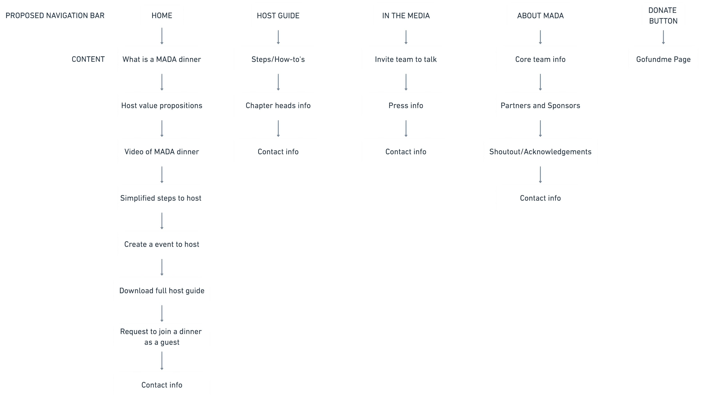

Let's Make America Dinner Again!
There's nothing like dinner to bring people together!

Dinners consisting of respectful conversations, guided activities, and delicious food shared among guests who have differing viewpoints and our country's best interests at heart.
The Brief
There are more people who register to attend MADA dinners as guests than those who register to express interest to host a MADA dinner. And even among those who express interest in hosting a dinner, many often do not follow through to actually hosting.
Problem
Confusing navigation and content arrangement
Potential hosts need a better way to find the information they need to host a dinner, address their concerns, and keep their motivations up
Solution
Pave a Happy Path to an Organized Showroom
Re-designed desktop experience that helps keep potential hosts stay motivated to host a dinner and enables them to begin the host journey on MADA's website while they're actively motivated, curious and looking for information!
Internalizing the needs
Team Project
My Responsibilities
Tools
Duration
Pivotal Methodologies
Key Insights
Design Propositions
Redesigned information architecture and user interface
Information Architecture
Redesigned information architecture diagram
User Interface
Speak to hosts
Navigate
Motivate
Help Create
Delegate
Speak to guests
Aggregate

Design Rationale
Unsuccessful to Host

Ideal host flow per MADA

Actual host journey


This homepage does not speak to me as a host
It was too much information for me and I couldn't easily find the information I needed
I was confused on where to start. I saw my city on the first thing at the page, I selected San Francisc
I felt no connection with MADA. I was not sure where they are helping
Results and Reflections
More Hierarchy
Users, during usability testing, noted being satisfied with the layout of the information provided and further, while uncharacteristic of my target user, many users during usability testing demonstrated the check-out of an item in under 60 seconds from home page to product analysis to checkout confirmation page.
Guest service
My design decisions for this sprint were based off of usability findings and identified pain-points in the navigation of the existing website. Ideally, a card sorting exercise to dictate my new information architecture and site map would be my next step to either confirm my design decisions or adjust them to what the users would anticipate to find.
COVID-19
Usability testing with users identifying as consistent as possible with my target user, the "careful critic" shopper, would yield more accurate results of the satisfaction and effectiveness of the prototype.